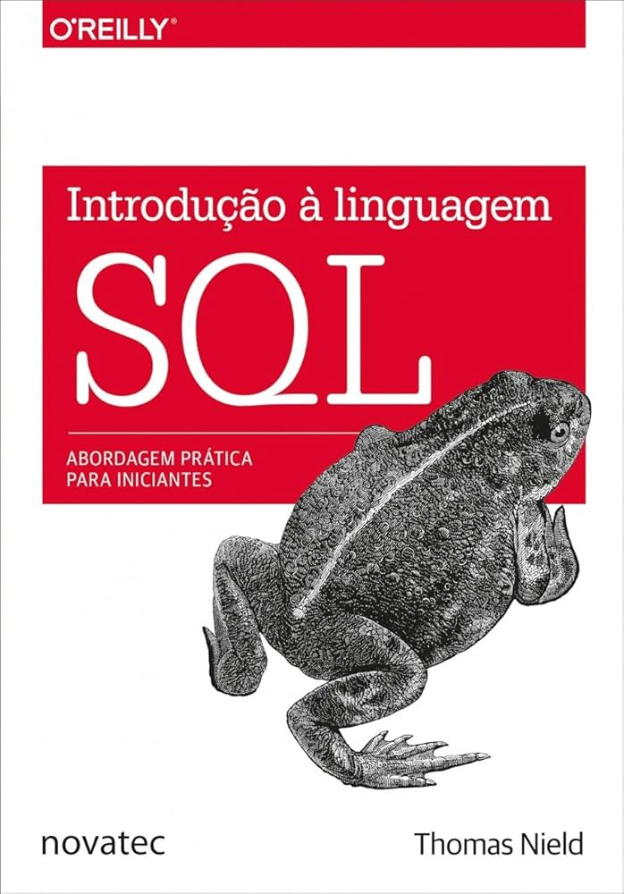
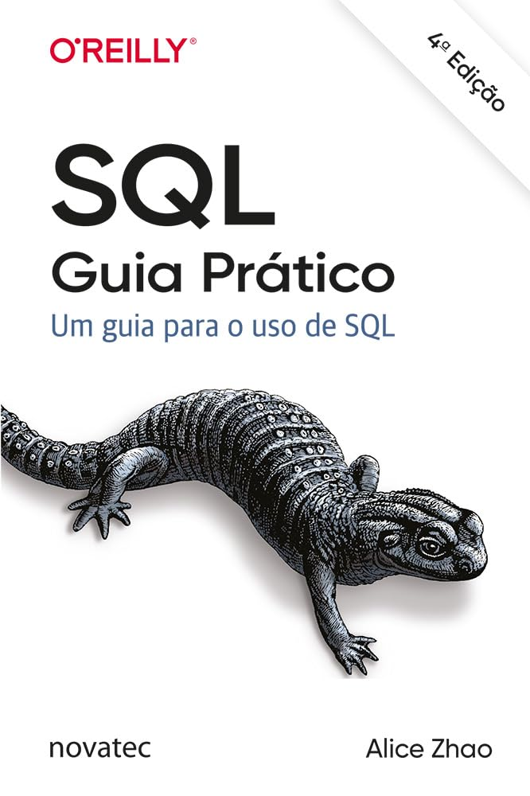

ODS que pretendo contribuir

Desenvolvedor Web Front-end
Sou estudante de Análise e Desenvolvimento de Sistemas pela UTFPR e estou em busca de uma oportunidade de estágio na área de desenvolvimento web front-end. Tenho grande interesse na criação de interfaces modernas, responsivas e centradas na experiência do usuário. Atualmente, venho me aprofundando em tecnologias e fundamentos do front-end, com foco em HTML, CSS, JavaScript e frameworks modernos. Sou proativo, curioso e gosto de aprender na prática, sempre buscando evoluir tecnicamente e transformar ideias em soluções visuais eficientes, intuitivas e de qualidade.
[03/2024] - [10/2025]
- Introdução à linguagem SQL (Thomas Nield)

- SQL Guia Prático (Alice Zhao)

- Fundamentos de Engenharia de Dados (Joe Reis, Matt Housley)